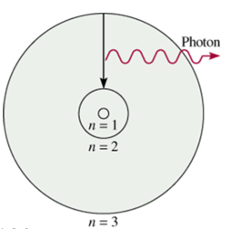

Week 3 - Day 3
Navigate using audio
Announcements
- Audio 0:00:12.758487
- MyLabs Plus
- Troubles
- If you are still experiencing error messages, the problem is probably with your browser
- Try clearing your cache and cookies
- If your lab TA e-mails you that you can’t come to lab because you can’t use the homework site you will not be able to come
- But if you follow “procedure” (not sure what procedure) you will be allowed to come (assuming the problem is actually with the Pearson site)
Test 1
- Next Wednesday in our usual classroom at 6:30 PM
- All you should bring is a pencil, calculator, and photo-ID
- Try to get here close to time
- If you forget your photo ID, it’s fixable, but a nuisance
- Can’t leave the test before 7:05 PM even if you get through at 6:31 PM
- Should know all the constants we’ve used and the three formulas we’ve used
- Audio 0:09:21.043687
- Anything in chapters 1, 2, or 3
- Not all of chapter 3 will be on the test
Chapter 3 - Part 2
“Black Body Problem” Solved by Planck in 1900
- Audio 0:12:13.134181
- “… an act of despair … I was ready to sacrifice any of my previous convictions about physics …”
- Energy (light) is emitted or absorbed in discrete units (quantum).
-
- Audio 0:12:39.255151
- “One of the 7 or 8 numbers that define our universe”
- “a purely formal assumption … actually I did not think much about it…”
Mystery 2, “Photoelectric Effect” Solved by Einstein in 1905
- Audio 0:13:59.822330
- “for his services to Theoretical Physics, and especially for his discovery of the law of the photoelectric effect” 1921
- Light has both:
- wave nature
- particle nature
- Light has both:
- Photon is a “particle” of light
- Audio 0:15:56.294916
- Photo electrons are emitted as soon as you turn the light on is explained by the photon description
- Predicted that KE would be linearly dependent upon frequency
- hv = KE + BE
- KE = hv - BE
Example
-
Audio 0:16:45.896720
-
When copper is bombarded with high-energy electrons, X rays are emitted. Calculate the energy (in joules) associated with the photons if the wavelength of the X rays is 0.154 nm
Clicker Question
- Audio 0:22:58.445126
- A photon has a wavelength of 624 nm. Calculate the energy of the photon in joules
- Are there any extra reviews before the test?
- Audio 0:27:22.163854
- Some of Wednesday’s lecture will be review
- Also, there’s practice on the MyLabsPlus website
Emission Spectra
- Audio 0:28:51.812590
- Light had been thought of as a wave for a long time and now it’s being thought of as particles
- People were asking why is light emitted and absorbed in fixed quantities?
Examples of Spectra
- Audio 0:30:24.253251
- Each element has its own emission spectrum
- All of this points to atoms emitting and absorbing light / energy in discrete packets
The Bohr Model of the Atom
- Audio 0:31:23.054768
- The nuclear model of the atom (Rutherford model) does not explain what structural changes occur when the atom gains or loses energy.
- He hypothesized that only certain orbits are allowed and came up with a model which predicted what was observed
- Bohr developed a model of the atom to explain how the structure of the atom changes when it undergoes energy transitions.
- Bohr’s major idea was that the energy of the atom was quantized, and that the amount of energy in the atom was related to the electron’s position in the atom.
- Quantized means that the atom could have only very specific amounts of energy.
Bohr’s Model
- Audio 0:32:22.750198
- The electrons travel in orbits that are at a fixed distance from the nucleus.
- Found different shapes of orbits
- Stationary states
- Therefore, the energy of the electron was proportional to the distance the orbit was from the nucleus.
- Electrons emit radiation when they “jump” from an orbit with higher energy down to an orbit with lower energy.
- Audio 0:32:58.969212
- The emitted radiation was a photon of light.
- The distance between the orbits determined the energy of the photon of light produced.
Bohr Model of H Atoms
- Audio 0:33:26.216675
- Shows how particles jump orbits
Bohr’s Model of the Atom (1913)
- Audio 0:33:46.737388
- e- can only have specific (quantized) energy values
- light is emitted as e- and moves from one energy level to a lower energy level
- n (principal quantum number) = 1,2,3,…
- RH (Rydberg constant) = 2.18 x 10-18J
- 
Weakness’ of Bohr’s Model
- Audio 0:35:34.154227
- Only worked for Hydrogen, Li 2+, and Be 3+
- Only for a nucleus and one electron
- When charges are forced through curved path they emit radiation (Bermsstrahlung) so “orbits around nuclei are unstable”
Wave Behavior Properties: Interference
- Audio 0:36:55.247976
- Einstein says light has wave and particle properties
- Now we think maybe particles have wave properties
- The interaction between waves (e.g., electromagnetic, ocean) is called interference.
- Interference Types:
- Constructive interference: waves that interact so that they make a larger wave are said to be in phase
- Destructive interference: Waves that interact so that they cancel each other out are said to be out of phase
- Constructive interference: waves that interact so that they make a larger wave are said to be in phase
Two-Slit Interference
- Audio 0:38:15.810042
- Diffraction pattern
- Either it goes through a slit or it doesn’t
Wave Behavior Properties: Diffraction
- Audio 0:38:41.975443
- When traveling waves encounter an obstacle or opening in a barrier that is about the same size as the wavelength, they bend around it; this is called diffraction.
- Traveling particles do not diffract
- The diffraction of light through two slits separated by a distance comparable to the wavelength results in an interference pattern of the diffracted waves.
- An interference pattern is a characteristic of all light waves.
Wave Behavior of Electrons
- Audio 0:39:38.320960
- De Broglie proposed that particles could have wavelike character.
- De Broglie predicted that the wavelength of a particle was inversely proportional to its momentum.
- Because it is so small, the wave character of electrons is significant.
- De Broglie relation
Example problem
- Audio 0:40:32.639227
- What are the de Broglie wavelengths (in nm) associated with an electron traveling at 6.0 * 10^5 ms-1 and a 52.5 g Ping-Pong ball traveling at 15.6 m/s?
Vocab
| Term | Definition |
|---|---|
| wave particle duality of light | describes that light acts like a wave and a particle in different scenarios |
| photon | particle of light |
| quantized | Property of atoms meaning that the atom could have only very specific amounts of energy |
| constructive interference (in phase) | occurs when waves that interact so that they make a larger wave |
| destructive interference (out of phase) | occurs when waves interact so that they cancel each other out |
| diffraction | occurs when waves bend around an obstacle or opening in a barrier which is about the same size as the wavelength |